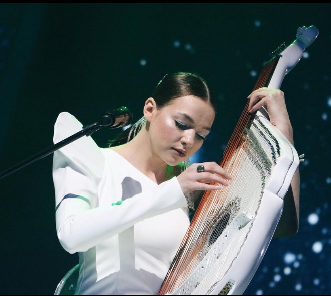

Слухай Українське
Народний інструментможе бути сучасним.
Популярні стереотипи
- Бандура - те саме що й кобза
Йдемо гуглити:
- Бандура
-
- кількість струн - від 42 до 65
- відкритий спосіб гри (як на арфі, нічого не треба притискати - береш і смикаєш)
- асиметрична форма
- можна грати обома руками
- Кобза
-
- кількість струн - від 4 до 12
- має ладки (щоб добути потрібну ноту - треба спочатку затиснути лад на грифі, типу як на гітарі:) )
- грушовидна симетрична форма
- однією рукою затискаємо лади, іншою щипаємо струни
- На бандурі грають тільки чоловіки, переважно старшого віку
Та невже? :)
- 

-
Бандура це нафталін, що там можна зіграти крім народних пісень?
Ні, ні і ще раз ні. Бандура давно вийшла за рамки суто народної музики і дуже вдало показує себе в найрізноманітніших жанрах. Як на рахунок медтації? Чи може рок? А можливо, електронна музика? Хто не вірить - тицяй сюди, або сюди, або, наприклад, сюди. Слухаємо,
офігіваємодивуємось, насолоджуємось :)
Галерея
Так, бандура наразі не дуже популярна (плак-плак), але з кожним роком про неї дізнається все більше людей. Мрію про день, коли не бачитиму збентежені погляди перехожих (наче ананас на голові несу) і не чутиму питань по типу "Дєвушка, ета у вас флєйка ілі кантрабас?"
Ну, а поки пропоную ще трохи познайомитись з творчістю сучасних бандуристів.
Залишились питання?
Завжди рада розповісти більше :) Зв'язатись можна за формою нижче<html>